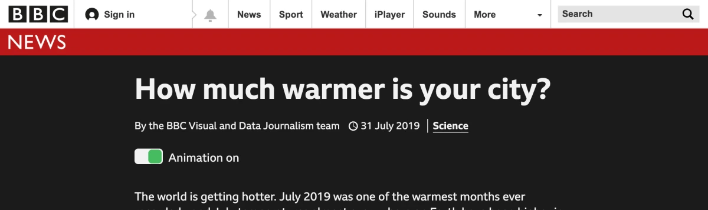
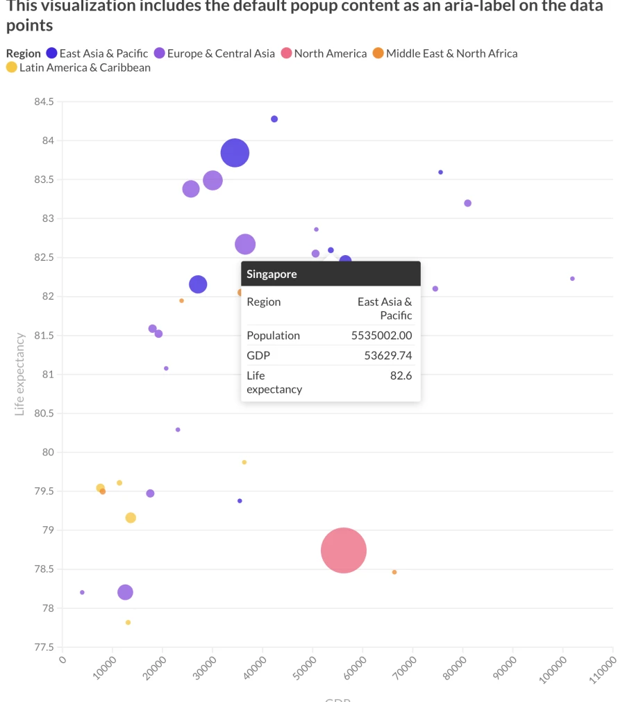

ACCESSIBILITY
Accessibility engineering at BBC News and Flourish
At BBC News I gave readers control over animation in scrollytelling. At Flourish I led accessibility fixes across the chart template library and coordinated the response to an external audit across three codebases.
BBC News motion controls
As an accessibility champion in BBC News’s Visual and Data Journalism team, I introduced a motion toggle when we started building stories that animated as readers scrolled. Readers could switch off animation before it began. We first used the toggle on Falling through the pay gap. For How much warmer is your city?, we also made it follow the reader’s reduced-motion setting.

Flourish from audit to release
I owned the template remediation work and coordinated the response to the external audit across three codebases. I organised and triaged the findings, documented core user flows and prepared questions for a workshop with the auditor. That gave the teams a way to work through barriers in the order people encountered them and turn the findings into fixes.
WCAG 2.1 AA guided the improvements ahead of the European Accessibility Act in 2025. My direct engineering responsibility was the visualisation template library.
Keyboard access to chart popups
In hierarchy charts, a popup can contain the details a reader needs about a category. If those details depend on hovering, a reader using a keyboard can miss them. I made the popups reachable by keyboard and used visible focus to show which item the reader was on.

Try keyboard focus in a public Flourish treemap. Press Tab to reach a tile. The highlighted tile shows where you are.
I also worked on the card carousel’s roles and keyboard interaction so people could identify the control and move through its cards.
Screen-reader access to charts and tables
I improved chart data tables so readers could reach individual values and hear which column was sorted and in which direction. In animated charts, live-region captions made changes available as the view updated.
I also worked on formatting numbers in screen-reader labels so values were easier to understand when spoken.
Tap alternatives to dragging
A drag requires someone to hold contact while moving across the screen. I added tap alternatives so touch users could complete the same action with a simpler gesture.
Speaking and related work
- Adventures in accessible storytelling · Women Driven Development, 2020
- How to make your data viz speak all languages · Outlier, 2022
- How much warmer is your city? · BBC News case study
- Behind the scenes of the BBC climate interactive · Article